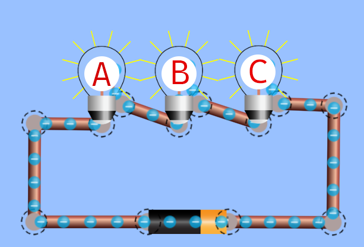
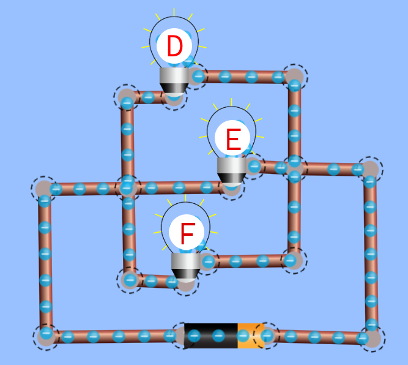

Rangkaian Listrik
Tujuan Pembelajaran
- Siswa mampu mengukur kuat arus listrik dan beda potensial pada rangkaian tertutup dengan benar
- Siswa mampu menyelidiki hubungan antara kuat arus dan beda potensial listrik dengan baik
- Siswa mampu menerapkan hukum ohm pada rangkaian seri dan dan paralel dengan baik
- Siswa mampu menentukan perbedaan hambatan beberapa jenis bahan konduktor dan isolator dengan benar
Tahukah kamu mengapa ada sebuah sakelar yang dapat digunakan untuk menyalakan beberapa lampu sekaligus, tetapi ada juga sebuah sakelar yang hanya dapat digunakan untuk menyalakan sebuah lampu saja? Apa yang menyebabkan hal ini terjadi? Menyala atau tidaknya lampu listrik tergantung pada rangkaian listrik. Rangkaian listrik terbagi menjadi 2, yaitu rangkaian seri dan paralel. Agar memahami perbedaan rangkaian listrik seri dan paralel, lakukan kegiatan berikut.

Tujuan Percobaan:
Mengetahui perbedaan rangkaian listrik seri dan paralel.
Cara Kerja:
- Susunlah rangkaian listrik 1 seperti pada Gambar 4 berikut hingga seluruh lampu menyala.
- Putuskan sambungan kabel pada Lampu A. Apakah Lampu B dan Lampu C tetap menyala?
-
Kembalikan rangkaian listrik 1 seperti semula sehingga
seluruh lampu menyala.
 Gambar 4. Rangkaian listrik 1
- Hapuslah Lampu C, apakah Lampu A dan Lampu B tetap menyala?
- Susunlah rangkaian listrik 2 seperti Gambar 4 berikut hingga seluruh lampu menyala.
- Putuskan sambungan kabel pada Lampu D. Apakah Lampu E dan Lampu F tetap menyala?
- Kembalikan rangkaian listrik 2 seperti semula sehingga seluruh lampu menyala.
-
Hapuslah Lampu F, apakah Lampu D dan Lampu E tetap
menyala?
 Gambar 5. Rangkaian listrik 2
Berdasarkan aktivitas di atas, jawablah pertanyaan berikut ini!
-
Rangkaian listrik manakah yang memiliki cabang?
-
2. Rangkaian listrik manakah yang tetap menyala meski
salah satu lampu tidak ada?
Rangkaian listrik 1 tidak memiliki percabangan kabel, sehingga rangkaian tersebut disebut rangkaian seri. Ketiadaan percabangan kabel pada rangkaian listrik seri mengakibatkan aliran listrik akan terputus jika salah satu ujung kabel terputus, sehingga arus tidak ada yang mengalir di dalam rangkaian dan seluruh lampu akan mati. Rangkaian listrik 2 memiliki percabangan kabel, maka rangkaian tersebut disebut rangkaian paralel. Jika salah satu ujung kabel terputus, maka arus listrik akan tetap mengalir pada kabel lainnya yang masih terhubung dan beberapa lampu lainnya akan tetap menyala.